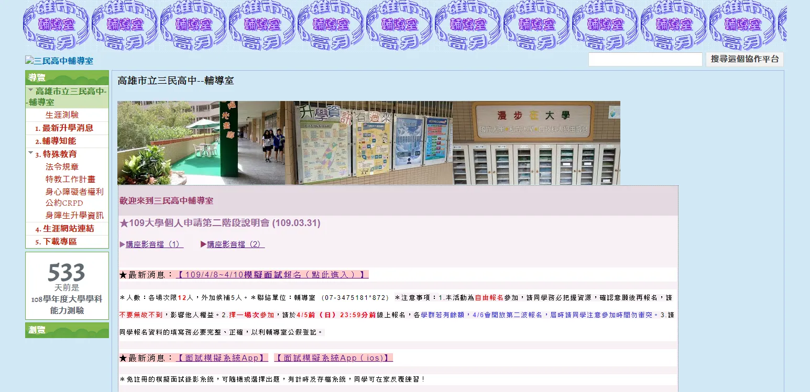

tl;dr: 從舊版 Google Site 搬遷到 WordPress 的紀錄和改變。
來到三民後，明顯可以發現到學校是 Google Sites 愛用者，一整個感覺就不太對了。

這是舊版的 Google Sites，但在現今人手一機的時代，在手機上瀏覽這類的網站，容易會導致使用者瀏覽體驗不佳，難瀏覽之類的。
剛好配合校網計畫，所以就打算幫輔導室換個新網站。
而前面提到的校網計畫，就打算用 WordPress 架設，既要能達到美觀（Google Sites 真的先下去），畢竟要留給管理者一個友善好管理的後台，要讓老師能容易上手。
大概建置了兩個月，終於建好了，包括建站初期要選版（Themes），還有外掛（Plugins，我不知道為什麼學校單位都很喜歡叫模組）的挑選，挑完之後還有後期外掛維護的問題，以及廣告消除的困擾。
來說說整個建站最艱辛的部分好了，因為是要給校方使用的，如果有架設過 WordPress 外掛的經驗，一定會發現很多免費外掛除了它原本的功能外，通常會參雜著許多額外的「廣告 notice」，如果讓校方持續看到廣告，體感會很差，形象也大打折扣。
不過幸好，WordPress 的一切是開源的，可以找到該段程式碼就可以把廣告根除（要找很仔細），除了廣告外，像 Download-Manager 就還有管理檔案目錄的功能，這如果下放權限給校方也能使用，會顯得越權，因為檔案目錄不該是校方能夠隨意存取更動的，如果改到不該改的還要去修復，超麻煩(⓿_⓿)，最後再修編外掛的時候根本就是整批程式碼 del 掉。
還有外掛的問題，有些不合需求，或參雜著太多無用資訊，我也有把它修改，但這樣的壞處就是沒辦法更新外掛（基本上也沒有更新的需求啦！）

為了讓老師能比較有方向上手 WordPress 後台，我另外還花時間寫了 WordPress 操作手冊（主要是校方會使用到的功能），真的是⋯好累啊！平常很順手的動作，要拆解成很多畫面，再一張一張為截圖詳細標註說明，真的很費時間。
最後，成品登場了！

利用 WordPress 重新整理後的成品！